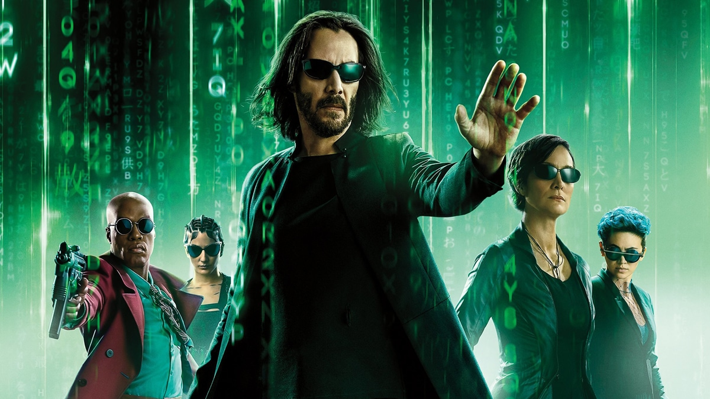

Matrix Resurrections: O Aguardado Retorno à Realidade Virtual Chega aos Cinemas
Após anos de expectativa e especulação, os fãs de ficção científica e amantes do cinema podem comemorar: "Matrix Resurrections" finalmente chega aos cinemas, prometendo uma experiência cinematográfica revolucionária e repleta de ação. A tão aguardada quarta instalação da franquia "Matrix" promete redefinir os limites da realidade virtual e oferecer aos espectadores uma jornada épica de volta ao icônico mundo distópico.
Escrito e dirigido por Lana Wachowski, um dos criadores originais da série, "Matrix Resurrections" transporta os espectadores de volta ao universo futurista onde a realidade é uma ilusão cuidadosamente criada. Com a volta de Keanu Reeves no papel do protagonista Neo e Carrie-Anne Moss como Trinity, os fãs podem esperar reencontrar personagens familiares e mergulhar em uma narrativa repleta de reviravoltas.
A tecnologia inovadora utilizada na produção promete elevar a experiência cinematográfica a um novo patamar. Efeitos visuais de última geração, cenas de ação deslumbrantes e uma trama que explora temas complexos, como inteligência artificial e a natureza da realidade, fazem de "Matrix Resurrections" um filme imperdível para os amantes do gênero.
Além do elenco principal, a produção também apresenta novos rostos, como Yahya Abdul-Mateen II, Jessica Henwick e Neil Patrick Harris, ampliando ainda mais o escopo do universo "Matrix". A combinação de talento experiente e talento emergente promete criar uma dinâmica cativante que dará nova vida à franquia.
O lançamento do filme marca um marco na cultura pop, trazendo de volta uma das sagas mais influentes e icônicas da história do cinema. A expectativa é que "Matrix Resurrections" não apenas atenda às altas expectativas dos fãs, mas também inspire novas gerações a explorar os limites da realidade e da imaginação.
Os cinemas de todo o mundo estão se preparando para receber o público ansioso para embarcar nessa jornada única. Com uma mistura de nostalgia e inovação, "Matrix Resurrections" promete reafirmar seu lugar como um marco na história do cinema e deixar uma marca indelével na cultura pop por muitos anos vindouros.